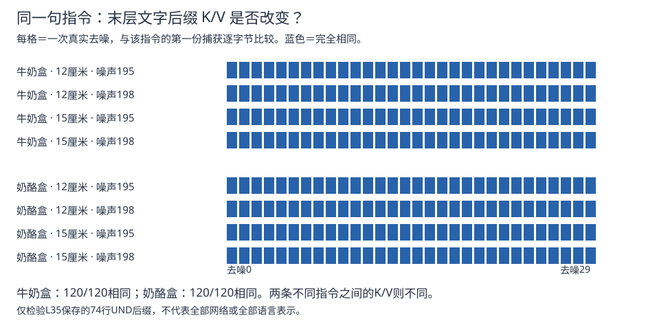
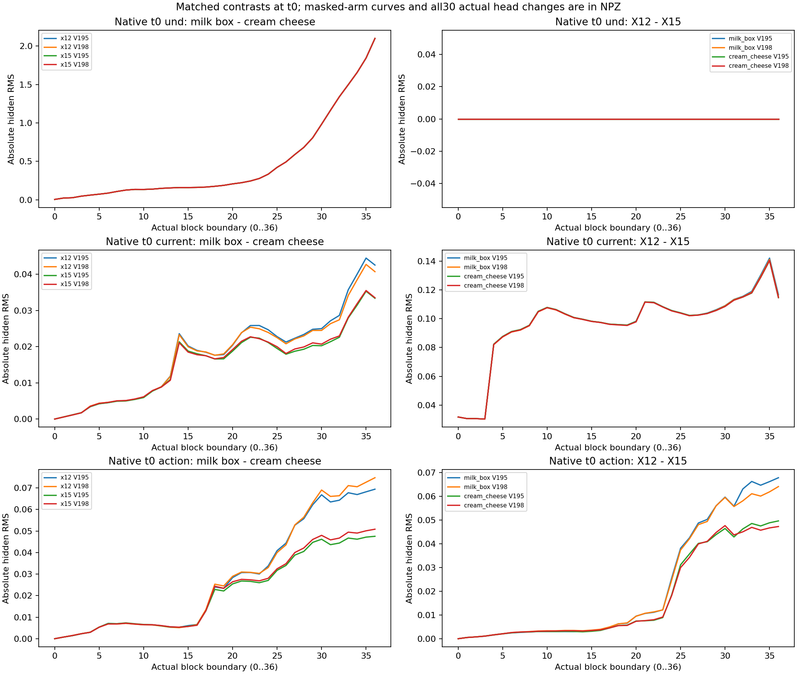
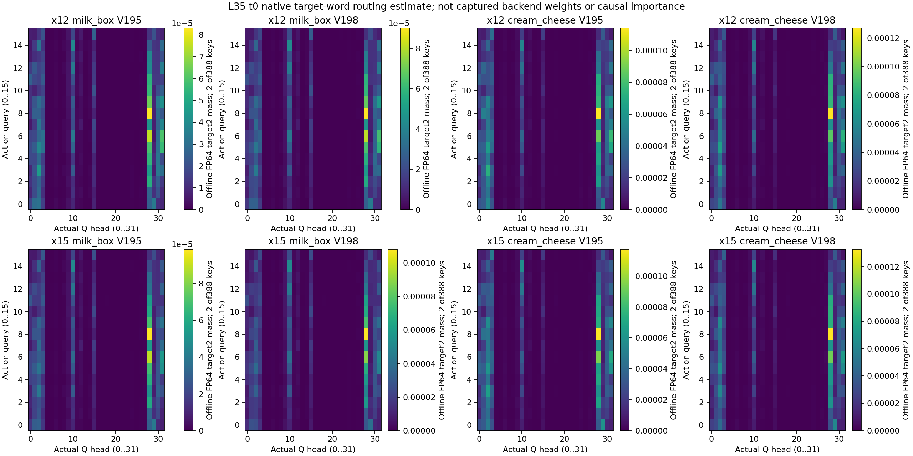

2026-10-05 · 最新完成：24条真实执行＋720次内部捕获＋只读数组核验
文字状态还在，动作却不一定按它选目标。
本轮排除了一个干扰：用“milk box”和“cream cheese”两种真实名称，指令长度和目标词位置完全一样，只改变目标名称。因此，这轮的语言对照没有同时改变token数量与位置。
这是社区权重、两个初态与两个配对噪声的结果，不能当作总体成功率。原始“milk”指令在15厘米的失败仍未修好。
1. 实际抓谁？
照片、机器人初态、动作初始噪声保持配对。表中先看未经内部干预的网络。
| 牛奶位置 | 未来生成噪声 | 指令：抓牛奶盒 | 指令：抓奶酪盒 |
|---|---|---|---|
| 移动12厘米 | 195 | 奶酪盒 ❌ | 奶酪盒 ✅ |
| 移动12厘米 | 198 | 牛奶 ✅ | 奶酪盒 ✅ |
| 移动15厘米 | 195 | 奶酪盒 ❌ | 奶酪盒 ✅ |
| 移动15厘米 | 198 | 牛奶 ✅ | 奶酪盒 ✅ |
“完全不读语言”解释不了全部结果。噪声198下，只换名称就会换抓取对象。但换成195，同样的指令又抓错；语言没有稳定控制目标。
还复测了前9层“未来视觉→当前视觉”切边：195下，它能让12厘米条件抓回牛奶，却救不了15厘米条件。因此，之前的内部改动不是通用修复。连接全保留对照的对象分类与原生全部一致。
一次只播放一条MuJoCo录像。“抓起”要求双侧指垫接触、抬高超过2厘米、连续5条记录；不等于完成放篮任务。所有24条件都执行，没有挑最好的一条。
全部24条结果
| 位置 | 指令 | 噪声 | 内部条件 | 实际抓起 | 合格5条窗口 |
|---|---|---|---|---|---|
| 12厘米 | 牛奶盒 | 195 | 原生网络 | 奶酪盒 | 70–74 |
| 12厘米 | 牛奶盒 | 198 | 原生网络 | 牛奶 | 64–68 |
| 12厘米 | 奶酪盒 | 195 | 原生网络 | 奶酪盒 | 70–74 |
| 12厘米 | 奶酪盒 | 198 | 原生网络 | 奶酪盒 | 67–71 |
| 15厘米 | 牛奶盒 | 195 | 原生网络 | 奶酪盒 | 70–74 |
| 15厘米 | 牛奶盒 | 198 | 原生网络 | 牛奶 | 64–68 |
| 15厘米 | 奶酪盒 | 195 | 原生网络 | 奶酪盒 | 68–72 |
| 15厘米 | 奶酪盒 | 198 | 原生网络 | 奶酪盒 | 67–71 |
| 12厘米 | 牛奶盒 | 195 | 连接全保留对照 | 奶酪盒 | 70–74 |
| 12厘米 | 牛奶盒 | 198 | 连接全保留对照 | 牛奶 | 64–68 |
| 12厘米 | 奶酪盒 | 195 | 连接全保留对照 | 奶酪盒 | 70–74 |
| 12厘米 | 奶酪盒 | 198 | 连接全保留对照 | 奶酪盒 | 67–71 |
| 15厘米 | 牛奶盒 | 195 | 连接全保留对照 | 奶酪盒 | 70–74 |
| 15厘米 | 牛奶盒 | 198 | 连接全保留对照 | 牛奶 | 62–66 |
| 15厘米 | 奶酪盒 | 195 | 连接全保留对照 | 奶酪盒 | 68–72 |
| 15厘米 | 奶酪盒 | 198 | 连接全保留对照 | 奶酪盒 | 67–71 |
| 12厘米 | 牛奶盒 | 195 | 前9层切边 | 牛奶 | 64–68 |
| 12厘米 | 牛奶盒 | 198 | 前9层切边 | 牛奶 | 63–67 |
| 12厘米 | 奶酪盒 | 195 | 前9层切边 | 奶酪盒 | 70–74 |
| 12厘米 | 奶酪盒 | 198 | 前9层切边 | 奶酪盒 | 71–75 |
| 15厘米 | 牛奶盒 | 195 | 前9层切边 | 奶酪盒 | 68–72 |
| 15厘米 | 牛奶盒 | 198 | 前9层切边 | 牛奶 | 64–68 |
| 15厘米 | 奶酪盒 | 195 | 前9层切边 | 奶酪盒 | 68–72 |
| 15厘米 | 奶酪盒 | 198 | 前9层切边 | 奶酪盒 | 67–71 |
2. 这次在网络里面查到了什么？
同指令120份相同→视觉／动作状态读取它
具体问题待定位→动作输出与实际抓取
K/V可以先理解成：供其他状态读取的文字数组。这段存的是文字侧状态，物体在哪里还需要结合视觉与动作侧的计算。相同指令的这段数组保持固定，符合这条文字支路的结构；不能据此说整个网络没变。

看真实各层差异与末层读取图


核验覆盖720份真实内部边界、720份末层dispatch片段、240份原生语言后缀、192份实际执行预测与3072条控制命令。末层为零编号L35；后缀为UND第48～121行，共74行。不同目标名称的K/V确实不同；相同名称跨条件保持一致。目标词之前的完整K/V只捕获了首个去噪时刻，因此不把后缀结论扩展到未核验部分。
3. 下一项局部实验：末层怎样处理读进来的目标信息？
猜想：动作状态读到另一目标的信息后，末层MLP的更新可能把它拉回原来的动作方向。要检验这个猜想，就比较“换入另一指令的文字K/V”和“同样换入，但固定住MLP对这次替换的响应”。
准备做双向替换：牛奶盒→奶酪盒、奶酪盒→牛奶盒，并加入自身替换与相同强度随机方向对照。只改末层供16个动作位置读取的部分，再把真实动作交给MuJoCo。
目前结论：排除了输入长度混杂和这段语言后缀随位置／噪声丢失的解释；还没有定位具体出错head或MLP，也没证明模型背了某条训练动作。